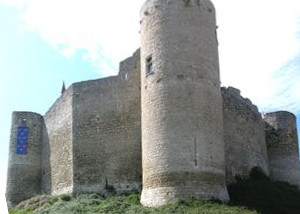
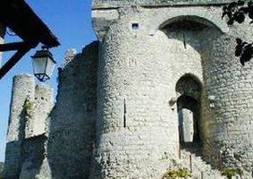
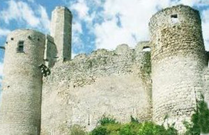
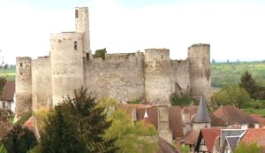
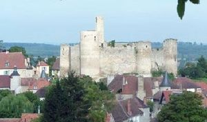
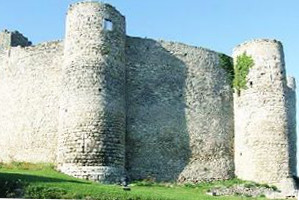
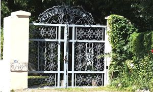

Recensement Jean-Claude Truffet
| Département | 03 — Allier |
| Canton | Lurcy-Lévis |
| Commune | Château-sur-Allier |
| Type d'édifice | Vestiges |
| Période d'origine | XIII |







BILLY, du XIIIe au XIVe siècle d'une forteresse primitive par Archambaud VII sire de Bourbon, fut très longtemps le patrimoine des Bourbons de 1356 à 1410 Louis II duc de Bourbon. Linfluence des Bourbons dans la région participa, dune part, à la constitution dun bourg castral puis à la ville franche et fortifiée sur le site, à accroître la prospérité de la châtellenie de Billy jusquau début du XVIe siècle, le contrôle des ducs sur le territoire se percevait aisément par lintermédiaire des capitaines-châtelains, officiers et représentants ducaux placés à la tête des différentes circonscriptions. Le château fut très tôt le siège dun bailliage royal, puis celui dune châtellenie liée au futur duché de Bourbon. lédifice et toutes ses dépendances avaient été vendus par le seigneur Hugues Colombi au sire Archambaud VIII (famille de Bourbon) qui étendait alors son territoire jusquaux portes de lAuvergne. Fort logiquement, le site fut avant tout stratégique du fait des rivalités qu'entretenaient les seigneurs de Bourbon avec les puissants comtes dAuvergne. Aujourd'hui propriété de la commune de Billy. GAILLARD, du château, il reste plus que le souvenir du nom du lieu. "Château Gaillard", qualificatif répandu pour désigner une forteresse, a pu être un ouvrage avancé du château des seigneur de Bourbon, voire d'un premier château, avant la construction, au XIIe siècle, du château de Billy. Aujourd'hui un manoir édifié au XVIIe siècle dans le style classique, occupe l'emplacement de l'ancien. Cette construction aux allures de maison bourgeoise est placée à la sortie nord de Billy, à côté de l'étang. Transformé en hôtel restaurant par Constantin Françoise-Jeanne.
Billy, avant lapparition de ce "castrum", il est possible détablir une ère chronologique qui implique la constitution dun édifice fortifié proche de celui qui existe aujourdhui. En effet, létude de larchitecture (philippienne) et du contexte historique (conquête de lAuvergne par le roi de France Philippe-Auguste jusquen 1213) conjuguée aux quelques sources textuelles et données archéologiques sur Billy laisse penser que la forteresse a été construite dès le début du XIIIe siècle subissant probablement, par la suite (et notamment après 1232), de plus ou moins grandes modifications. Après les guerres de religion en 1562-1598 le château tomba en ruines constitué de pierres grossièrement taillées; la forteresse est protégée au nord et à l'Est, là où l'escarpement de la colline la met hors d'atteinte, les courtines et la base des tours sont percées de longues archères et le châtelet d'entrée est protégé par un pont levis. Restes du XIIIe siècle qui étaient liés à l'enceinte fermant la basse-cour du château. L'enceinte principale est remarquable par sa forme ovoïde et surtout par sa tour de guet hexagonale, La Guette qui domine les maisons du bourg et les rues médiévales qui serpentent autour des murs du château. Le châtelet qui abrite l'entrée est toujours aussi imposant et une promenade aménagée sur la courtine sud offre un magnifique panorama.
Duché de Bourbon"
Vestiges du château féodal de Billy et portail du château Gaillard